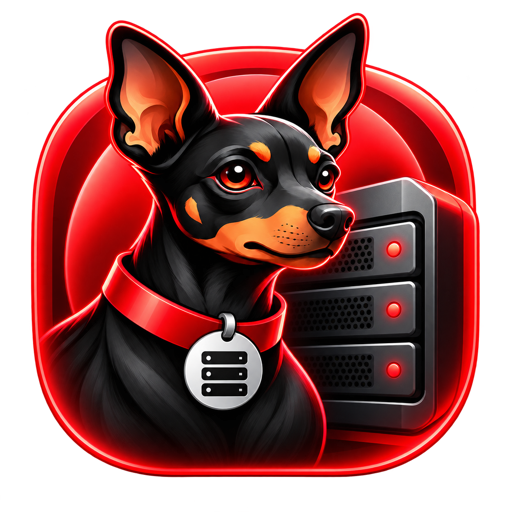
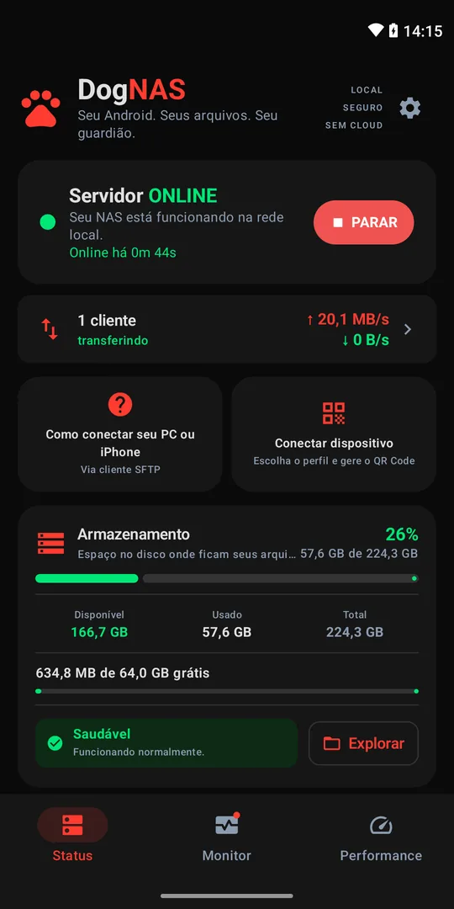
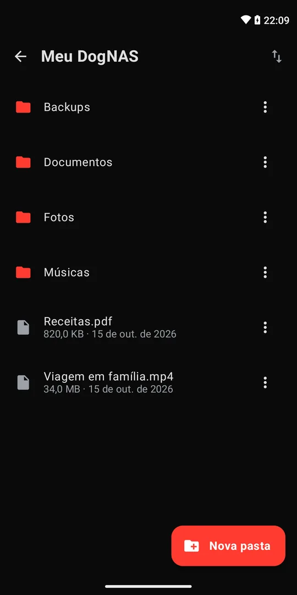
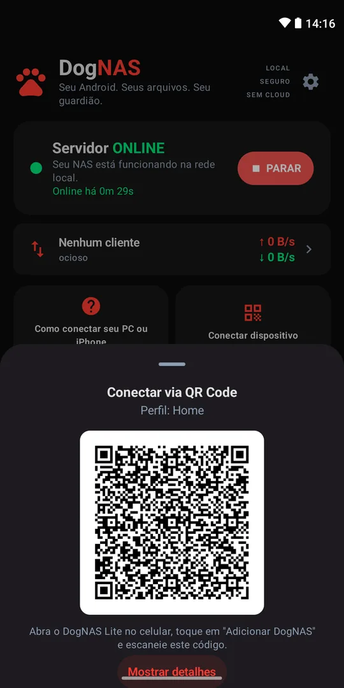
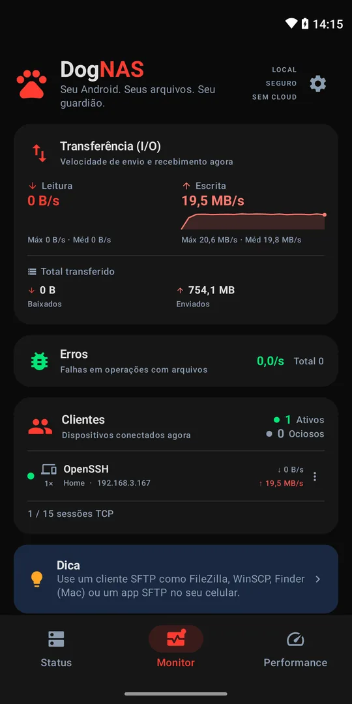
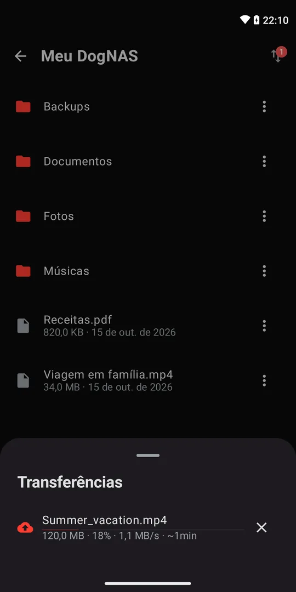
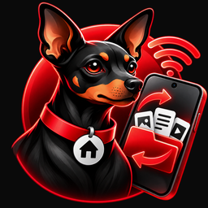

DogNASO DogNAS transforma um Android que você já tem num servidor de arquivos particular, na sua rede Wi-Fi. Sem nuvem e sem mensalidade.


Seu Android antigo vira o armazenamento da família, pelo Wi-Fi. Sem complicação.
Ver como funciona →Um servidor SFTP sempre ligado: NAS em casa ou no escritório, smart home e IoT.
Ver detalhes técnicos →Para sua casa
Aquele celular parado na gaveta passa a guardar as fotos, os vídeos e os documentos de todo mundo. Você acessa pelo celular, de qualquer cômodo, sem cabos e sem pagar nuvem.
Mande fotos e vídeos para o DogNAS e apague do celular sem medo de perder.
Cada perfil tem seu PIN e suas pastas. Ninguém vê os arquivos dos outros.
Aponte a câmera para o QR Code, digite o PIN e pronto.
Os arquivos ficam na sua casa. Nada de conta, anúncios ou cobrança todo mês.
Instale o DogNAS no Android que vai guardar os arquivos — no aparelho, num cartão SD ou num HD USB — e toque em Iniciar.
Gere o QR Code de um perfil e leia com o DogNAS Lite. Cada perfil tem seu PIN e seu espaço.

Navegue, envie e baixe pelo Wi-Fi de casa. PCs e Macs conectam por SFTP.
Para tech, smart home e escritório
Um NAS leve para casa ou escritório: qualquer dispositivo, script ou automação que fale SFTP envia e busca arquivos pela rede Wi-Fi.
Pastas por perfil, acessadas de PC, Mac e Linux com FileZilla, WinSCP, Cyberduck, rclone ou o sftp do OpenSSH.
Receba arquivos de câmeras e NVRs com envio por SFTP, backups de outros servidores e scripts de automação (Home Assistant, Node-RED, cron).
SSH-2 com AES-GCM ou ChaCha20, chave do servidor fixada no pareamento e uma credencial por dispositivo, revogável a qualquer hora.
Grava na memória interna, num cartão SD ou num HD ou pendrive USB. No Pro, volta sozinho depois de reiniciar.
| Protocolo | SFTP sobre SSH-2 |
|---|---|
| Autenticação | Usuário e senha — uma credencial por dispositivo, revogável |
| Armazenamento | Memória interna, cartão SD, HD ou pendrive USB |
| Clientes | DogNAS Lite, FileZilla, WinSCP, Cyberduck, rclone, OpenSSH e scripts |
| Requisitos | Android 7.0 ou mais recente, na mesma rede |


| Grátis | Pro | |
|---|---|---|
| Armazenamento | 64 GB | Todo o aparelho |
| Perfis | Casa + 2 | Ilimitados |
| Dispositivos pareados | 3 | Ilimitados |
| Performance | Boa | Máxima otimizada |
| Com o app fechado | Pausam | Continuam |
| Após reiniciar | Toque para iniciar | Inicia sozinho |
DogNAS Pro: compra única, sem assinatura. O DogNAS Lite é sempre gratuito.
O servidor: instale no Android que vai guardar os arquivos.

O app de acesso: instale no celular para ver, enviar e baixar os arquivos.